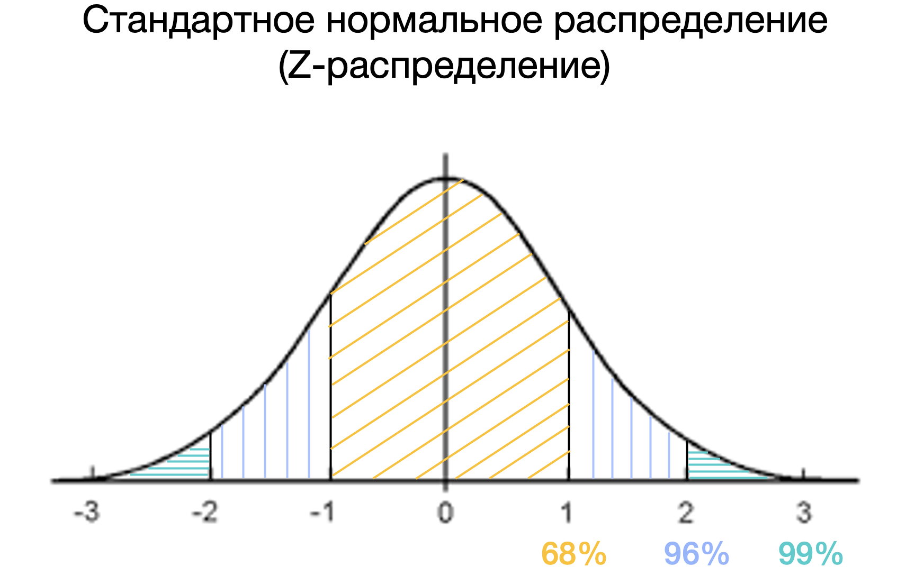
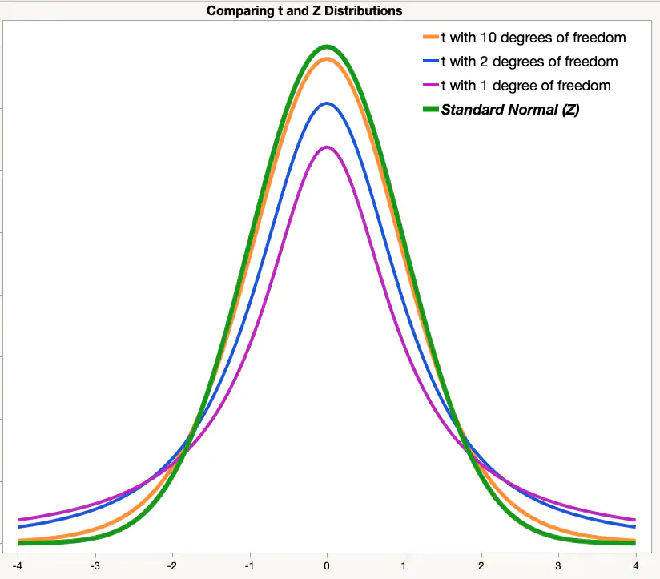
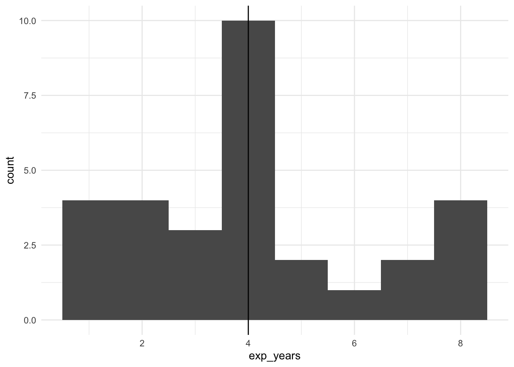

9 Статистические критерии
Статистическим критерием называется правило, по которому мы будем пытаться отвергнуть нулевую гипотезу. Разным гипотезам и данным подходят разные критерии.
Статистический критерий включает:
- Теоретическое распределение, на котором мы будем располагать сравниваемые средние: вид кривой и математическая формула этого вероятностного закона
- Формулу, по которому мы будем рассчитывать искомое значение критерия (как уже рассчитывали \(Z_{Mмаленькие}\)) исходя из наших данных на выборке
- Соответствие рассчитанного значения и процентов расположенных данных до этого значения на распределении
- Формулу для рассчета числа степеней свобооды для этого критерия
9.0.1 Степени свободы
Число степененй свободы (Degrees of Freedom, df) – количество направления для изменения признака. Формула для расчета степеней свободы своя для каждого статистического критерия (нам не нужно рассчитывать самостоятельно) и зависит, собственно, от вида статистического критерия, дизайна нашего исследования (сколько сравнений мы проводим) и числа наблюдений в выборке.
Для t-критерия число степеней свободы высчитывается очень просто: \(df = n_1 -1 + n_2 - 1 = n_1 + n_2 - 2\)
9.1 Ключевые статистики критериев
9.1.1 Статистики (Z, T, F)
Z-распределение
В прошлый раз мы рассмотрели пример, когда сравнивали среднее время, которое проводят родители с детьми, в больших и маленьких городах, и сравнивали эти значения на примере [Z-распределения] {stat_test_example): мы получали Z-статистику и находили соответствующий распределению Z-оценок процент данных для найденной точки.

\(Z = \frac{M - \mu}{\frac{\sigma}{\sqrt{n}}} = \frac{M - \mu}{\frac{sd}{\sqrt{n}}}\)
Это самый простой вариант критерия для проверки статистических гипотез – но не единственный. На самом деле, в качестве распределения, на которое мы помещаем точки (средние) и сравниваем их друг с другом, могут быть и другие, в зависимости от характера наших данных. Рассмотрим основные из них.
https://gallery.shinyapps.io/dist_calc/
T-распределение Стьюдента

Как мы видим, оно очень похоже на Z-распределение, но у него чуть более приподнятые хвосты.
Формула, которой задается вероятностный закон Т-распределения Стьюдента:
Негласно считается, что при объеме выборки от n=30 t-распределение считается близким к Z-распределению, которе является нормальным, и можем использовать его. Но в реальности это не совсем так.
Формула для расчета T-значения исходя из наших данных:
\(t = \frac{M_1 - M_2}{\frac{sd_{1;2}}{\sqrt{n_{1;2}}}} = \frac{M_1 - M_2}{\sqrt{\frac{sd_1^2}{n_1} + \frac{sd_2^2}{n_2}}}\)
F-распределение

\(\chi^2\)-распределение
9.2 Выбор статистического критерия
Вопросы, которые влияют на принятие решения относительно статистического теста:
- Зависимая переменная: количественная (интервальная шкала или шкала отношений) или категориальная (номинативная или порядковая шкала)?
- Если ЗП количественная – она описывается параметрическим (чаще всего нормальным) распределением? (определяется чаще “на глаз” по графику плотности вероятности или QQ-графиками, тесты на нормальность почти всегда будут давать негативный результат из-за чувствительности и поэтому в современном анализе данных используются мало)
- Сколько независимых переменных?
- НП количественные (интервальная и шкала отношений) или категориальные (номинативная и порядковая)?
- Если НП категориальные и мы сравниваем группы – данные в группах зависимы или нет? Если нет, как сильно отличаются данные в группах, можем ли сказать, что дисперсия ЗП примерно одинакова в группах или нет? (равенство дисперсий называется Homogeneity of Variance, проверяется с помощью Levene’s test)
Есть большое количество схем, но обычно они сильно перегруженны и сложны в использовании, больше путают, чем помогают.
Но я зачем-то все равно решила попробовать нарисовать свою, и вот результат: https://miro.com/app/board/uXjVOxmKhr8=/?share_link_id=245423331470
9.3 T-тест (сравнение средних двух групп)
Вернемся к данным про студентов и нашим вопросам
Допустим, мы исследовали семьи с подростками в крупных (GP school) и небольших городах (MS school) и на нашей выборке посчитали, что в крупных городах родители проводят со своими детьми в среднем 14 часов, а в небольших городах – 15 часов в неделю (из данных задания на доверительный интвервал). 1. Отличается ли статически значимо время, которое проводят родители с детьми в России в крупных и небольших городах? 2. Отличается ли статистически значимо частота употребления алкоголя в семьях с менее поддерживающими отношениями и более поддерживающими? 3. Отличается ли статистически значимо средний балл по математике у тех, кто чаще или реже пропускает занятия?
| student | school | sex | age | address | famsize | Pstatus | Medu | Fedu | Mjob | Fjob | reason | guardian | traveltime | studytime | failures | schoolsup | famsup | paid_mat | activities | nursery | higher | internet | romantic | famrel | freetime | goout | Dalc | Walc | health | absences_mat | G1_mat | G2_mat | G3_mat | paid_por | absences_por | G1_por | G2_por | G3_por | G_mat | G_por | absences_mat_groups | absences_por_groups |
|---|---|---|---|---|---|---|---|---|---|---|---|---|---|---|---|---|---|---|---|---|---|---|---|---|---|---|---|---|---|---|---|---|---|---|---|---|---|---|---|---|---|---|
| id1 | GP | F | 18 | U | GT3 | A | 4 | 4 | at_home | teacher | course | mother | 2 | 2 | 0 | yes | no | no | no | yes | yes | no | no | 4 | 3 | 4 | 1 | 1 | 3 | 6 | 5 | 6 | 6 | no | 4 | 0 | 11 | 11 | 5.666667 | 7.333333 | middle | less |
| id2 | GP | F | 17 | U | GT3 | T | 1 | 1 | at_home | other | course | father | 1 | 2 | 0 | no | yes | no | no | no | yes | yes | no | 5 | 3 | 3 | 1 | 1 | 3 | 4 | 5 | 5 | 6 | no | 2 | 9 | 11 | 11 | 5.333333 | 10.333333 | less | less |
| id4 | GP | F | 15 | U | GT3 | T | 4 | 2 | health | services | home | mother | 1 | 3 | 0 | no | yes | yes | yes | yes | yes | yes | yes | 3 | 2 | 2 | 1 | 1 | 5 | 2 | 15 | 14 | 15 | no | 0 | 14 | 14 | 14 | 14.666667 | 14.000000 | less | less |
| id5 | GP | F | 16 | U | GT3 | T | 3 | 3 | other | other | home | father | 1 | 2 | 0 | no | yes | yes | no | yes | yes | no | no | 4 | 3 | 2 | 1 | 2 | 5 | 4 | 6 | 10 | 10 | no | 0 | 11 | 13 | 13 | 8.666667 | 12.333333 | less | less |
| id6 | GP | M | 16 | U | LE3 | T | 4 | 3 | services | other | reputation | mother | 1 | 2 | 0 | no | yes | yes | yes | yes | yes | yes | no | 5 | 4 | 2 | 1 | 2 | 5 | 10 | 15 | 15 | 15 | no | 6 | 12 | 12 | 13 | 15.000000 | 12.333333 | middle | middle |
| id7 | GP | M | 16 | U | LE3 | T | 2 | 2 | other | other | home | mother | 1 | 2 | 0 | no | no | no | no | yes | yes | yes | no | 4 | 4 | 4 | 1 | 1 | 3 | 0 | 12 | 12 | 11 | no | 0 | 13 | 12 | 13 | 11.666667 | 12.666667 | less | less |
| id8 | GP | F | 17 | U | GT3 | A | 4 | 4 | other | teacher | home | mother | 2 | 2 | 0 | yes | yes | no | no | yes | yes | no | no | 4 | 1 | 4 | 1 | 1 | 1 | 6 | 6 | 5 | 6 | no | 2 | 10 | 13 | 13 | 5.666667 | 12.000000 | middle | less |
| id9 | GP | M | 15 | U | LE3 | A | 3 | 2 | services | other | home | mother | 1 | 2 | 0 | no | yes | yes | no | yes | yes | yes | no | 4 | 2 | 2 | 1 | 1 | 1 | 0 | 16 | 18 | 19 | no | 0 | 15 | 16 | 17 | 17.666667 | 16.000000 | less | less |
| id10 | GP | M | 15 | U | GT3 | T | 3 | 4 | other | other | home | mother | 1 | 2 | 0 | no | yes | yes | yes | yes | yes | yes | no | 5 | 5 | 1 | 1 | 1 | 5 | 0 | 14 | 15 | 15 | no | 0 | 12 | 12 | 13 | 14.666667 | 12.333333 | less | less |
| id11 | GP | F | 15 | U | GT3 | T | 4 | 4 | teacher | health | reputation | mother | 1 | 2 | 0 | no | yes | yes | no | yes | yes | yes | no | 3 | 3 | 3 | 1 | 2 | 2 | 0 | 10 | 8 | 9 | no | 2 | 14 | 14 | 14 | 9.000000 | 14.000000 | less | less |
Первый вопроос мы подробно разбирали в прошлый раз. Сейчас остановимся на третьем, который уже затрагивали.
Пройдем по алгоритму выбора статистического теста: https://miro.com/app/board/uXjVOxmKhr8=/?share_link_id=245423331470
Помимо осноовных отраженных ответвлений, для каждого критерия еще существует ряд допущений.
9.3.1 Допущения для т-теста
- Данные распределены нормально (или, если измеряемый признак является случайной велиичной, в группах больше 30 наблюдений) ()
- Дисперсии гомогенны
9.3.3 Вычисление т-теста
Средний балл и стандартное отклонение в группах тех, кто прогуливает меньше всего (на паре мы назвали их прихожанами):
## # A tibble: 1 x 3
## mean sd n
## <dbl> <dbl> <int>
## 1 11.2 3.70 207Средний балл в группах прогулищиков:
## # A tibble: 1 x 3
## mean sd n
## <dbl> <dbl> <int>
## 1 10.2 3.52 22students %>%
filter(absences_mat_groups != "middle") -> students_2
t.test(students_2$G_mat ~ students_2$absences_mat_groups, paired = FALSE)##
## Welch Two Sample t-test
##
## data: students_2$G_mat by students_2$absences_mat_groups
## t = 1.2839, df = 26.204, p-value = 0.2104
## alternative hypothesis: true difference in means is not equal to 0
## 95 percent confidence interval:
## -0.6112609 2.6475660
## sample estimates:
## mean in group less mean in group more
## 11.23027 10.21212students_2 %>%
ggplot(aes(x=absences_mat_groups, y = G_mat)) +
geom_boxplot(aes(fill = absences_mat_groups)) +
# scale_fill_viridis(discrete=TRUE) +
theme_minimal()
9.4 ANOVA (дисперсионный анализ)
https://angelgardt.github.io/SFDA2022/book/oneway-anova.html